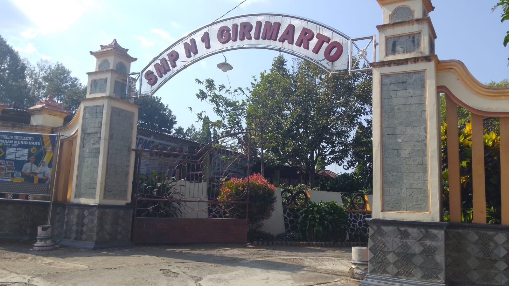
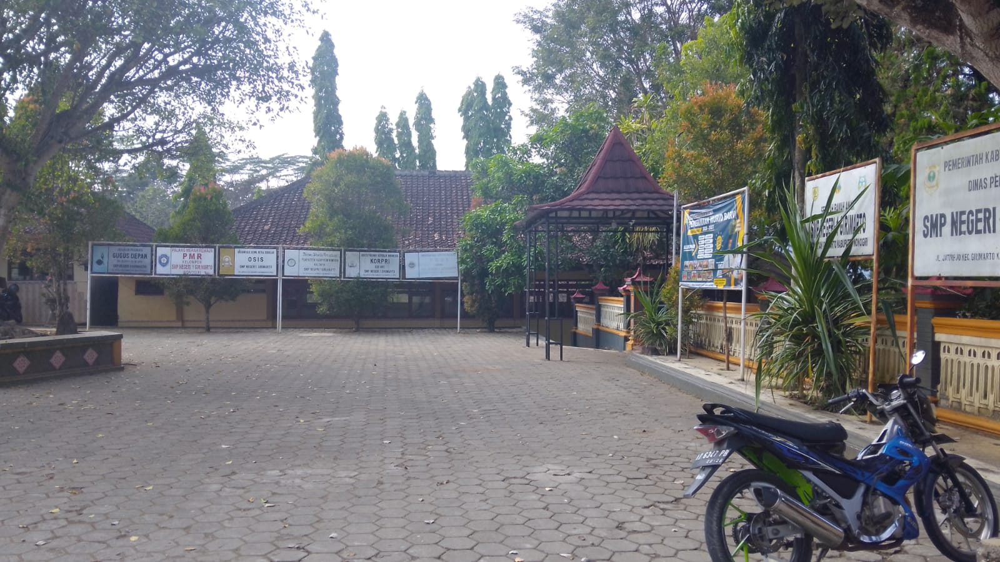
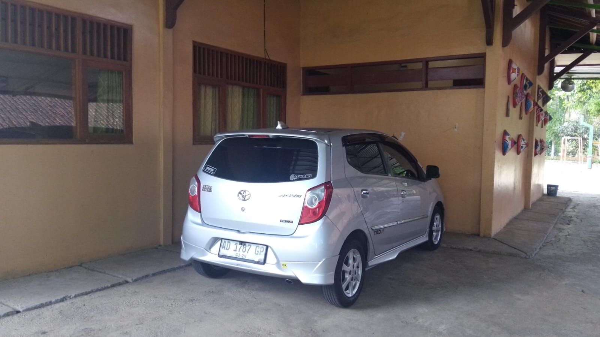
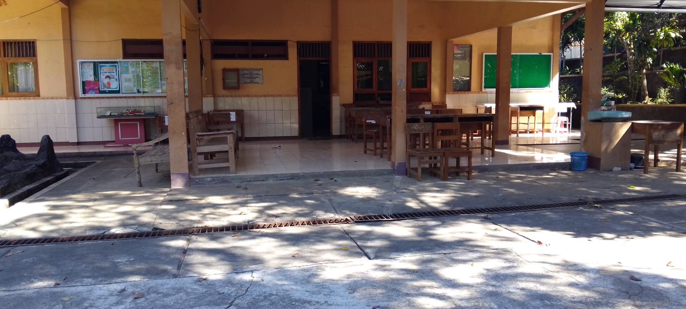
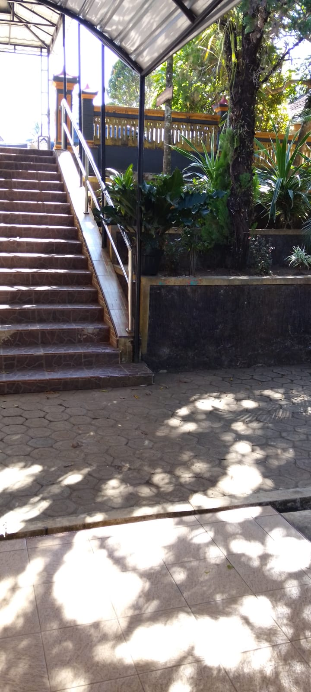

Sambutan Kepala Sekolah
Galeri Sekolah






Drs. Rendro Mardiyanto, M.Pd
Mewujudkan lulusan yang cerdas, terampil, peduli lingkungan, beriman dan bertaqwa, serta bertanggung jawab dalam berinteraksi secara efektif dengan lingkungan sosial dan alam.
Alamat Sekolah
Bendosari, RT 01 RW 01, Jatirejo, Girimarto, Wonogiri, Jawa Tengah 57683